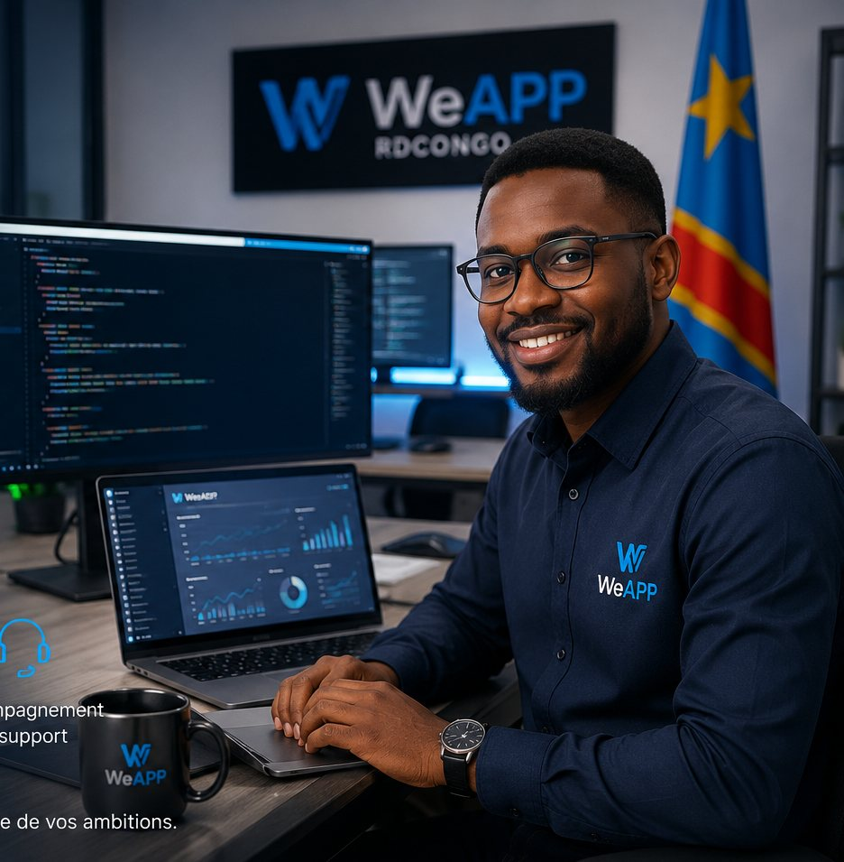

À propos de WeAPP
Woldius SARL RDC — Filiale Conception des Logiciels Professionnels. Une équipe qui allie rigueur d'ingénierie et connaissance fine du terrain africain.
Des professionnels engagés, un bureau ancré à Kinshasa
Derrière chaque logiciel WeAPP, une équipe d'ingénieurs et de développeurs basée en République Démocratique du Congo, qui conçoit, code et déploie avec la même exigence que sur n'importe quel marché international — avec en plus une connaissance fine des réalités du terrain africain.
- Développement sur mesure, pensé pour votre contexte
- Sécurité et fiabilité à chaque étape du projet
- Performance et évolutivité dans la durée
- Accompagnement et support après le déploiement

Une filiale née d'une exigence de qualité
WeAPP a été créée au sein de Woldius SARL RDC pour répondre à un constat simple : les organisations opérant en République Démocratique du Congo et en Afrique ont besoin de solutions numériques pensées avec la même rigueur que dans n'importe quel marché exigeant, mais adaptées à leurs réalités opérationnelles.
Notre rôle est de porter cette exigence dans chaque projet : une conception soignée, un développement maîtrisé, un déploiement accompagné et une documentation complète, permettant à chaque organisation de conserver la mémoire et la maîtrise de ses outils numériques.
Le bras conception logicielle de Woldius SARL RDC
WeAPP est la filiale de Woldius SARL RDC dédiée spécifiquement à la conception de logiciels professionnels. Elle intervient comme partenaire technique pour la digitalisation de processus métier, la structuration documentaire, l'intégration technique et le déploiement de solutions numériques.
Cette spécialisation permet à WeAPP de concentrer son expertise sur un domaine précis : offrir aux institutions et entreprises un accompagnement complet, de l'idée jusqu'à l'archivage du projet.
Ce qui guide notre travail
De la conception au déploiement
Offrir un dossier officiel de présentation, de capitalisation et d'archivage pour le continent africain, plus précisément pour la République Démocratique du Congo.
Une référence reconnue
Devenir une filiale reconnue pour la qualité de ses logiciels professionnels, la clarté de ses livrables, la solidité de ses déploiements et sa capacité à accompagner les organisations dans leur transformation numérique.
Les principes qui structurent chaque projet
Rigueur
Chaque étape est cadrée, documentée et vérifiée.
Fiabilité
Des solutions construites pour durer et résister à l'usage réel.
Confidentialité
Une gestion prudente et respectueuse des informations de nos clients.
Proximité
Une compréhension directe des réalités de la RDC et du continent.
Notre philosophie : concevoir des logiciels professionnels qui rendent chaque organisation plus autonome, mieux documentée et plus confiante dans sa transformation numérique.